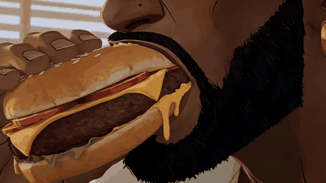
macro
01
muerde la hamburguesa, el queso cede
Abrir con textura, no con cara. El espectador entra por el apetito.
Esta guia sale de diseccionar dos videos reales, plano a plano, con
ffmpeg. No es teoria: los tiempos, las paletas y el ritmo que vas a leer estan
medidos sobre los archivos. Si sigues el orden, sale. Si te lo saltas, no.
on_the_road, uno cada 1.39 sblack_sand, el mas corto de 1 frameAnimacion pintada. Se reconoce por cinco cosas concretas, y las cinco se pueden pedir:
black_sand no hay una sola luz blanca en 76 segundos.Este es el orden y no es negociable. Cada paso da por hecho que el anterior esta aprobado, no solo hecho.
Primero el mundo, luego el personaje, luego los frames, luego el video. La razon es la luz: una ubicacion define hora del dia, direccion y temperatura de color. Si generas al personaje antes, lo generas con una luz inventada y despues no encaja en ningun sitio. Tendras planos correctos por separado que no cortan entre si.
| Para que | Herramienta | Alternativa | Nota |
|---|---|---|---|
| Estilo y style frames | Midjourney | Seedream 5 · Nano Banana Pro | A mano: no tiene API y sus terminos prohiben automatizarlo |
| Imagenes y start frames | Nano Banana Pro | Seedream 5 Pro · Flux 2 Pro | Nano Banana Pro es el mejor de los tres con texto |
| Editar sin regenerar | GPT Image 2 | Seedream 5 (is_inpaint) | Variantes de hora del dia, corregir un detalle |
| Consistencia de personaje | Elements de Higgsfield | --cref en Midjourney | Elements, no Soul: ver el paso 4 |
| Animar | Seedance 2.0 | Seedance 2.5 · Seedance 2.0 Mini | 2.0 es el unico con 4K real; 2.5 llega a 30 s |
| Montar | ffmpeg (scripts/montage.sh) | CapCut · Premiere | El montaje no necesita IA |
Para un video de unos 40 segundos como on_the_road, con
nano_banana_pro a 2k para las imagenes y seedance_2_0 a 720p para
el video:
| Concepto | Cantidad | A la primera | Realista (2,5 intentos) |
|---|---|---|---|
| Start frames (imagen) | 28 | 1,68 USD | 4,20 USD |
| Planos animados 4-6 s | 28 | 8,21 USD | 20,53 USD |
| Vinetas y negros | 0 en este video | 0,00 USD | 0,00 USD |
| Total | 39 s de video | 9,89 USD | 24,73 USD |
La columna que importa es la de la derecha. Nadie aprueba un plano a la primera. Dos o tres intentos por plano es lo normal, y en los bustos son mas. Presupuesta el doble y medio de lo que suma la teoria.
Las tarifas cambian: comprueba las tuyas en el panel de tu proveedor. Lo que no cambia es la proporcion: animar cuesta unas cinco veces mas que generar la imagen. Por eso el sistema entero se organiza alrededor de no animar hasta estar seguro.
black_sand son 19 de 53 planos: gastar 4 segundos de video para usar
2 frames es tirar el dinero.Cada tarjeta es un frame real del video, extraido con ffmpeg.
Debajo, que pasa en el plano y — lo que de verdad importa — por que esta ahi.
Filtra por tipo de plano para ver el patron.
Fijate en una cosa mientras miras: casi nunca hay dos planos seguidos del mismo tipo, salvo los macros, que van en pareja. Ese es el motor de todo. Un amplio detras de otro amplio aburre; un macro detras de un macro construye un objeto.
Un hombre come en un diner del desierto, se sube a su coche y se va. No hay trama. Lo que sostiene el video es el ritmo: 2,62 s por plano en el primer acto, 1,46 en el segundo, 1,03 en el tercero. Acelera sin parar y no hay un solo tramo que vaya mas lento que el anterior. Esa curva es la estructura.
| Duracion | Planos | Plano medio | Cortes / s | Mas corto | Mas largo |
|---|---|---|---|---|---|
| 39.01 s | 28 | 1.39 s | 0.69 | 10 frames | 173 frames |
| Acto | Duracion | Planos | s / plano | Paleta |
|---|---|---|---|---|
| 1. Diner del desierto | 10.5 s | 4 | 2.62 | #000001 #3E1D11 #7F6F64 #96B0C9 #693D25 |
| 2. Quemada de rueda y donuts | 13.2 s | 9 | 1.46 | #43352E #6F431A #000000 #EDB46B #BE7232 |
| 3. Carretera y velocidad | 15.4 s | 15 | 1.03 | #5C493F #C5C1B6 #1A1517 #000000 #DE9A5B |

muerde la hamburguesa, el queso cede
Abrir con textura, no con cara. El espectador entra por el apetito.
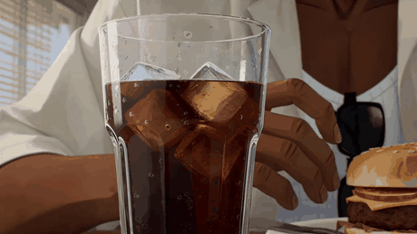
la mano rodea el vaso, el hielo asienta
Segundo inserto: instala el ritual antes de mostrar al hombre.
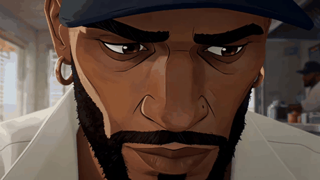
mastica y mira fuera de cuadro, sin prisa
Revelacion del personaje. Llega tarde a proposito: ya te importaba.
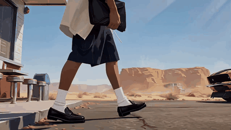
camina del diner al coche
El plano mas largo del video (5.8 s). Ensena el mundo entero de una vez y deja respirar antes de acelerar.
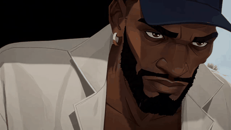
gira la cabeza hacia el coche
Pulso corto (0.33 s) que arranca el segundo acto.
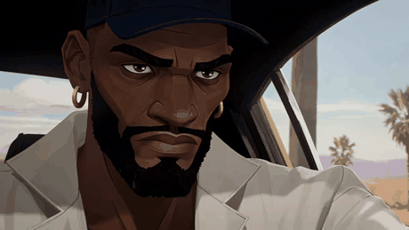
se acomoda al volante
Cambia el mundo: de fuera a dentro. Mismo rostro, nueva luz.
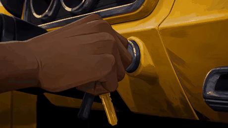
la mano gira la llave
El gesto de arranque. Un inserto de mano vale mas que un plano del motor.
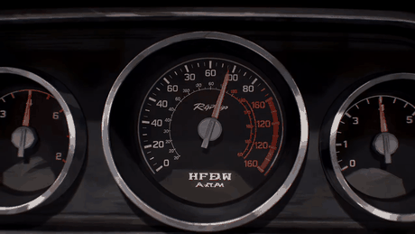
la aguja del cuentarrevoluciones sube
Traduce el sonido en imagen. Aqui es donde el montaje pide musica.
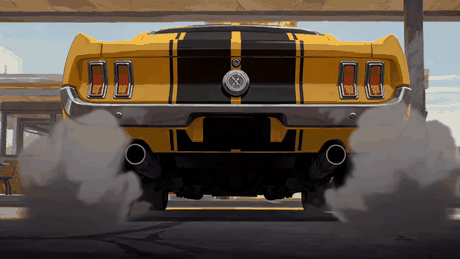
quemada de rueda parado, humo blanco
Primer estallido visual del video.
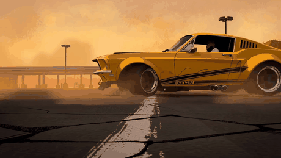
derrapa en circulo entre el humo
Ensena la accion completa una sola vez, para poder trocearla despues.
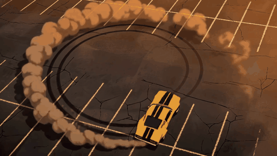
dibuja el circulo de goma quemada
Cambio de eje radical. El cenital resetea la vista y evita que el derrape canse.
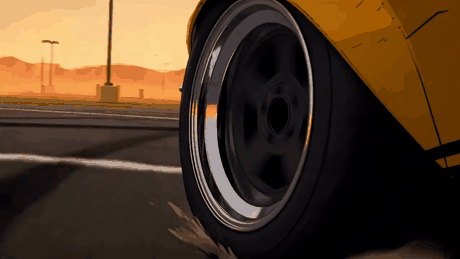
la rueda gira, el humo pasa
Inserto de textura entre dos planos amplios.
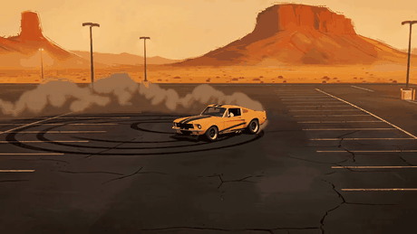
sigue derrapando, ya pequeno en cuadro
Cierra el acto dejando el coche lejos: el ojo descansa 4.3 s antes de la carretera.
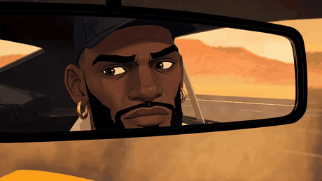
mira atras un instante
Truco de continuidad: el rostro vuelve enmarcado, sin gastar un plano de cara entero.
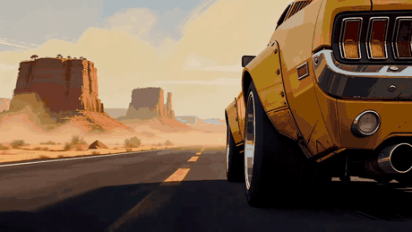
llega de frente por la carretera
Establece el tercer mundo: mesetas rojas, asfalto, horizonte.
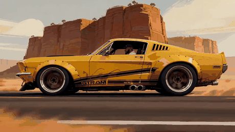
corre de perfil levantando polvo
El plano de velocidad de referencia. Todo lo que viene lo trocea.
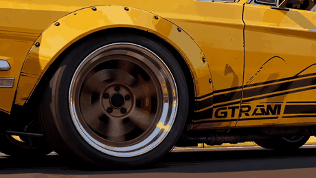
la rueda gira a velocidad
Detalle de fabricacion: el logo pintado vende que el coche existe.
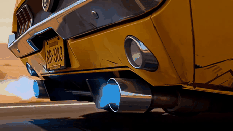
llamarada azul en los escapes
Un color frio en medio de 15 s de naranja. Es el acento que despierta el ojo.
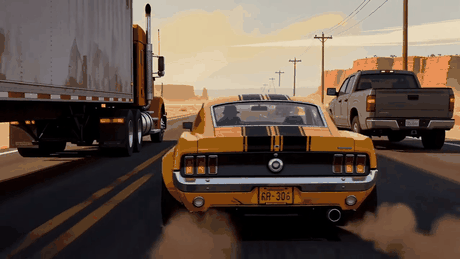
adelanta entre un camion y una pickup
Mete riesgo: por primera vez hay algo mas en la carretera.
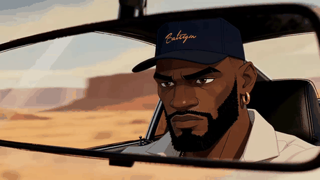
mantiene la mirada al frente
Segundo reflejo. Recordar la cara justo antes de que el montaje se vuelva abstracto.
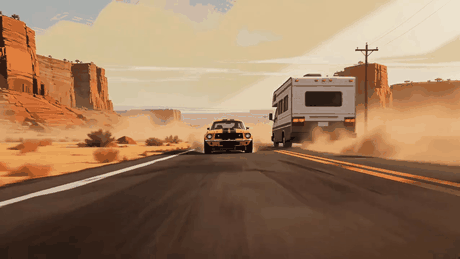
la carretera entra bajo el coche
Pone al espectador en el asiento. Un POV cada tanto ancla todo lo demas.
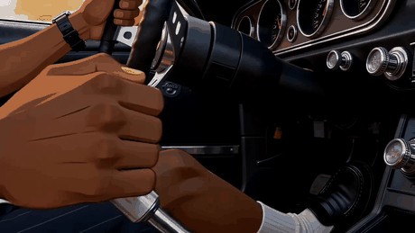
las manos corrigen la trayectoria
Devuelve el cuerpo al plano sin volver a la cara.
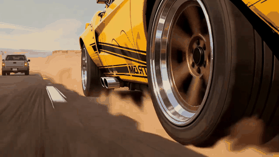
la rueda come asfalto
Plano de 10 frames. Aqui empieza la aceleracion del montaje.
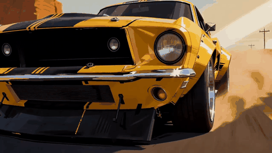
viene de frente a maxima velocidad
Golpe de escala en medio de la rafaga.
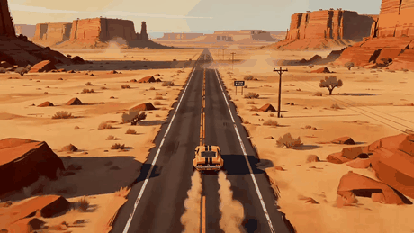
dos coches diminutos en la recta
Aire. Sin este plano la rafaga final agota.
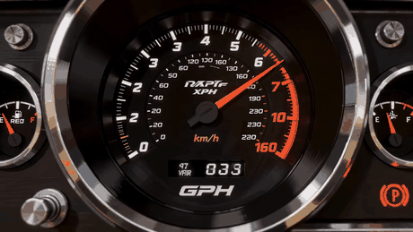
la aguja pasa la marca
El dato numerico. Cierra lo que abrio el cuentarrevoluciones del plano 8.
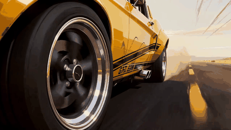
la rueda gira contra el sol bajo
Empieza a disolver la imagen en luz: preparacion del final.
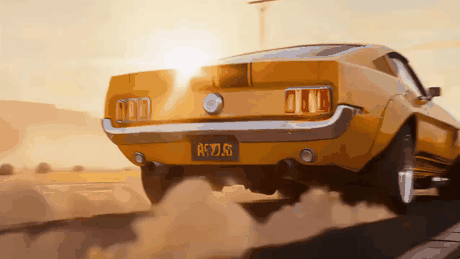
se va hacia el sol levantando polvo
Plano final largo (1.6 s). Devuelve la respiracion y cierra.
Aqui si hay historia, y el montaje funciona al reves: no acelera, alterna. Planos de 4 y 5 segundos donde pasa todo, y entre medias tres rafagas de vinetas de comic de 1 a 3 frames que duran menos de 0,4 segundos cada una. Ocho planos duran un solo frame. Ademas usa cinco negros de puntuacion, que on_the_road no tiene ni uno.
| Duracion | Planos | Plano medio | Cortes / s | Mas corto | Mas largo |
|---|---|---|---|---|---|
| 75.58 s | 53 | 1.43 s | 0.69 | 1 frames | 157 frames |
| Acto | Duracion | Planos | s / plano | Paleta |
|---|---|---|---|---|
| 1. Persecucion en el callejon | 9.5 s | 12 | 0.79 | #010002 #3A7C91 #4A2712 #E30F08 #335633 |
| 2. Impacto comic y trato | 16.0 s | 11 | 1.46 | #623A26 #6C8545 #438298 #1A0F06 #375031 |
| 3. Calle, KRAK! y la banda | 22.6 s | 13 | 1.74 | #000001 #A02811 #74391B #215E91 #141C19 |
| 4. Pelea nocturna, KRACK!! | 19.4 s | 11 | 1.76 | #000001 #3F6057 #421E14 #7A3E20 #293A3C |
| 5. Titulos BLACK SAND / OZ | 8.0 s | 6 | 1.34 | #000001 #545F7B #AA2014 #F4EFEE #1F171B |
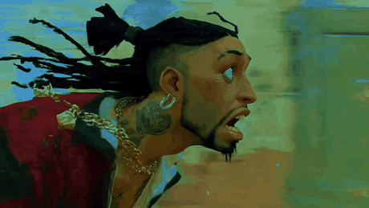
corre gritando, las trenzas al viento
Empieza en mitad de la accion. Nadie explica nada.
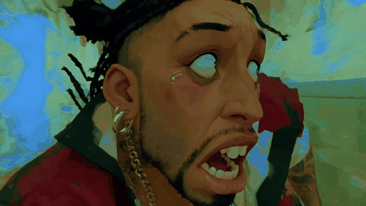
mira atras aterrado
Contraplano de miedo: instala que hay algo detras sin ensenarlo.
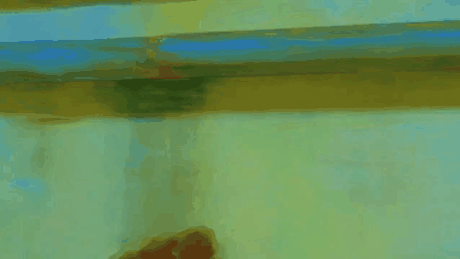
barrido de camara
El barrido hace de corte. Tapa el salto de posicion.
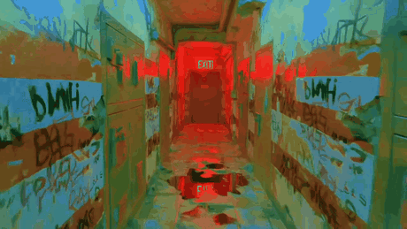
la puerta EXIT roja al fondo
Ensena el mundo en 0.4 s. Un solo plano de ubicacion, y muy corto.
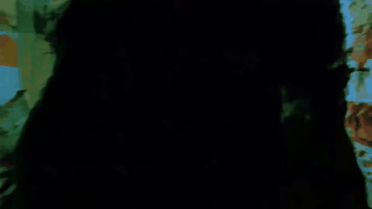
1 frame en negro
Parpadeo. El negro de 1 frame funciona como un golpe de bateria.
3 frames casi negros
Extiende el parpadeo lo justo para que se note.
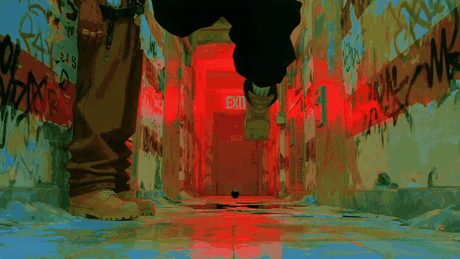
charco, grafiti y la puerta roja
Reinstala el espacio despues del negro, ya desde el suelo: alguien ha caido.
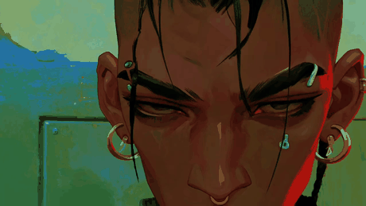
mira hacia abajo, sin expresion
Primera aparicion del protagonista. Llega despues del caos, y quieto.
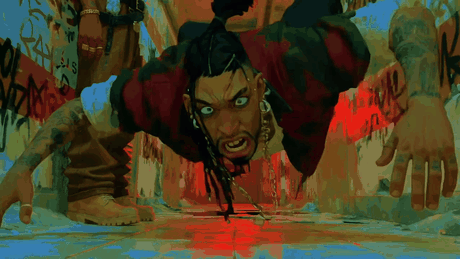
en el suelo mojado, la mano hacia camara
Cierra la persecucion: se resolvio fuera de cuadro.
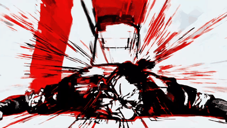
lineas de velocidad rojas y negras
Primera rafaga de comic. 3 frames.
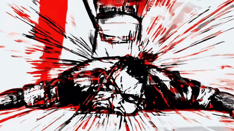
variante desplazada
1 frame. La variacion minima es lo que hace que se lea como vibracion.
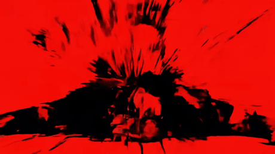
fondo rojo pleno
Invierte el fondo. Blanco-rojo-blanco: el ojo lo percibe como flash.
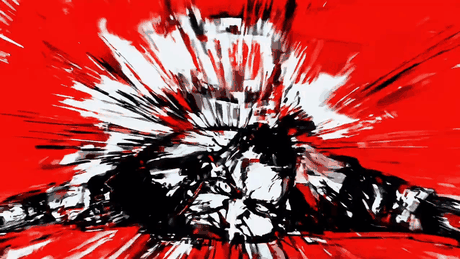
estallido blanco/negro/rojo
Cierra la rafaga de 4 vinetas en 0.3 s.
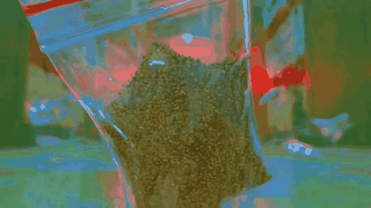
la bolsa cuelga contra la luz
El objeto que da nombre a todo. Despues de 9 s de ruido, 2.6 s de quietud.
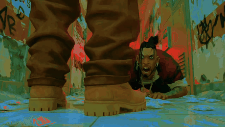
de pie sobre el charco
Poder por el encuadre: se le ve desde abajo y sin cara.
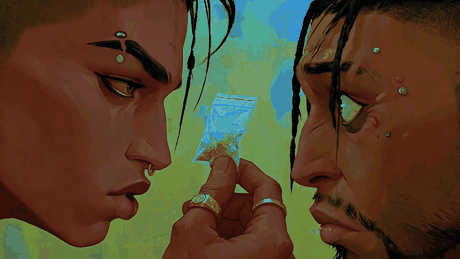
Marco ensena la bolsa
El plano mas largo del acto (4.2 s). Toda la trama cabe aqui.
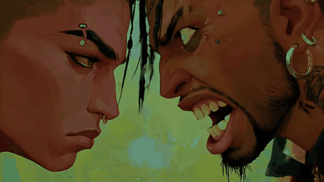
el otro grita, Marco no se mueve
Contraste de temperatura: uno estalla, el otro no.
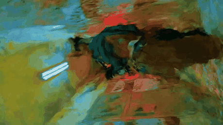
barrido verde y rojo
Aviso de que viene el golpe.
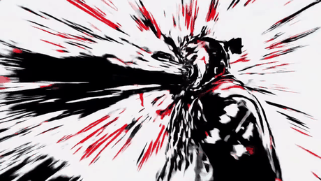
blanco/negro/rojo
1 frame.

variante
1 frame.
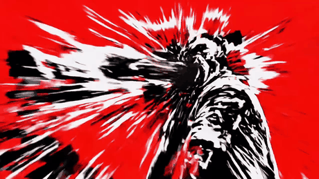
rojo pleno
2 frames. Cuatro vinetas en 0.16 s: esto es el golpe.
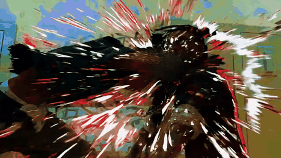
borron negro sobre verde
El smear traduce el comic de vuelta a la animacion.
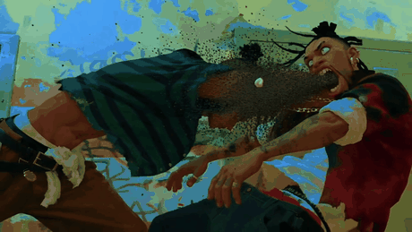
sale despedido contra la pared
Consecuencia. Sin este plano el golpe no cuesta nada.
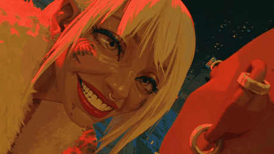
sonrie bajo la luz naranja
Cambio de acto por corte de color: de verde acido a naranja.
camina entre carros de la compra
Ubicacion nueva contada otra vez desde el suelo. Es la firma del corto.
exhala humo hacia la calle azul
Respiro de 4 s. Prepara el contraste con la rafaga que viene.
levanta el puno, la arena se dispara
Anticipacion: el golpe se ve venir un plano antes.
letras blancas sobre negro
La onomatopeya sustituye al plano de impacto. 3 frames.
misma palabra, trazo distinto
Redibujada, no desplazada. Eso es lo que la hace vibrar.
fondo crema con textura de papel
Invierte el fondo a mitad de la rafaga.
ultima variante
Cuatro dibujos en 0.37 s.
las manos se hunden en la arena
Explica el poder sin una linea de dialogo.
9 frames en negro
Negro largo: aqui separa secuencias, no golpea.
salta entre el andamiaje
Cambia el mundo a noche y neon sin explicarlo.
24 frames en negro
Elipsis. El negro hace de transicion de tiempo.
circulo de arena visto desde arriba
Eco del cenital del derrape en el otro video: el circulo como firma.
11 frames en negro
Ultimo negro antes del clímax.
una figura de espaldas frente a la persiana
Plano mas largo del video (5.2 s). Baja el pulso a cero para poder subirlo de golpe.
el jefe grita, Marco aguanta
Repite exactamente el encuadre del plano 16. La rima visual dice quien manda ahora.
sube los escalones rojos
Tercer plano de botas. Ya es un motivo.
el puno de arena entra en cuadro
El impacto empieza dentro del plano realista, no en la vineta.
cara deformada, franja cian
Panel completo: dibujo + texto + color complementario. El cian es el unico frio del acto.
variante
1 frame.
el panel se sostiene
14 frames: el unico panel que se deja leer.
1 frame de la cara golpeada
Vuelta al mundo real por un solo frame.
el puno de arena le entra en la boca
Ahora si se ve entero lo que la vineta habia insinuado.
grita con la arena dentro
4.4 s: el plano se alarga para que el golpe duela.
3 frames de dorado
Puente de color hacia los titulos.
el titulo sobre la estructura metalica
El nombre llega en el segundo 68 de 75. Se ha ganado antes.
logo rojo sobre la calle desenfocada
Firma de estudio sobre imagen.
logo rojo sobre negro
Misma firma, ya limpia.
negro con un punto de luz
Salida.
negro
Fin.
Ocho pasos en orden fijo. Marca cada uno cuando lo tengas aprobado, no cuando lo tengas hecho. Lo que marques se guarda en este dispositivo.
La regla dura: nunca se anima sin un start frame aprobado, y nunca se hace un start frame sin la hoja de personaje y la ubicacion aprobadas. Saltarse esto es la causa numero uno de tirar el presupuesto.
Primero el guion: tres o cuatro frases. Que pasa, quien lo hace, donde. Si no cabe en cuatro frases, todavia no lo tienes claro y no es momento de generar nada.
on_the_road entero cabe en una: un hombre come en un diner del desierto,
se sube a su coche y se va. No hay mas trama. Lo que hace que funcione es el ritmo, y el
ritmo se decide en la shotlist.
Despues la shotlist: una fila por plano, con tipo, camara, sujeto, accion y — la columna que la gente se salta — por que existe ese plano. Si no sabes contestar a eso en una frase, el plano sobra. Quitalo antes de que te cueste dinero.
Con estos seis se construye cualquier cosa:
El referente usa esta figura tres veces con distinto contenido:
busto (quien) → macro (que toca) → amplio (donde) → macro (textura)
Los planos 5-6-7-8 de on_the_road y los 20-21-22-23 son la misma figura con
otro decorado. No es falta de ideas: es que el espectador reconoce el patron y deja de
tener que orientarse, y entonces puedes acelerar.
Dos formas, y las dos funcionan:
on_the_road): 2,62 s por plano, luego 1,46,
luego 1,03. Ni un solo tramo mas lento que el anterior.black_sand): planos de 4 y 5 segundos donde pasa la
historia, y entre medias rafagas de cuatro vinetas en 0,3 segundos.Lo que no funciona es un ritmo constante. Treinta planos de 1,3 segundos seguidos se leen como un anuncio, no como una pelicula.
Decidir como se llama todo antes de generar la primera imagen. Cuando tengas 28 planos, 6 personajes y 90 imagenes, el nombre es lo unico que te dice que es cada cosa.
video-ia/ analysis/mi_video/ shotlist y anotaciones characters/mi_personaje/ sheet.md + ref/ + element.txt locations/mi_sitio/ sheet.md + ref/ props/mi_objeto/ sheet.md + ref/ prompts/mi_video/ 01_slug.md … 28_slug.md assets/frames/ mi_video_01_slug.png ← los start frames clips/ mi_video_01_slug.mp4 ← los videos montaje/lista_mi_video.tsv
Numero de plano con dos digitos, guion bajo, slug corto con guiones.
07_macro-llave. Nunca llave.png, nunca final_v2_bueno.png.
Dos digitos y no uno: con un digito, el orden alfabetico pone el plano 10 antes del 2. Con dos, el orden alfabetico es el orden del montaje y no tienes que pensarlo nunca mas.
El plano 7 es 07_macro-llave en su ficha de prompt, en su start frame y en su
clip. Cuando algo falle — y va a fallar — vas a poder ver los tres archivos del mismo plano de
un vistazo. Si cada carpeta usa su propio criterio, cada fallo te cuesta diez minutos de
buscar.
prompts/, en assets/frames/ y en clips/?Una ubicacion define hora del dia, direccion de la luz y temperatura de color. Si generas al personaje primero, lo generas con una luz inventada, y luego cada plano tiene su propia luz. El resultado son planos correctos por separado que no cortan entre si, y eso no se arregla en el montaje.
Un bloque de descripcion inmutable por ubicacion, y tres planchas: amplio (el sitio entero, define geometria y luz), medio (la zona que usaras de fondo en la mayoria de planos) y detalle (una textura, para los insertos macro).
six stools fija la geometria;
several stools no fija nada.Two light sources and no
others evita que el modelo meta un relleno suave que te destroza el contraste.El callejon de black_sand. Fijate en la ultima frase, que es la que hace todo
el trabajo:
LOCATION — GREEN ALLEY: a narrow service alley between two brick buildings, both walls painted over in flaking olive green #627B4F and acid yellow-green #8FA24A, covered in layered spray tags scrubbed half away. A steel fire door at the far end painted signal red #F20D0A with a lit red EXIT sign above it. Wet cracked asphalt underfoot holding standing water that reflects the red door. Two dumpsters, a rusted downpipe, a fire escape overhead cutting the sky into strips. Flat overcast daylight falling straight down and bouncing off the green walls, tinting everything green.
Sin bouncing off the green walls, tinting everything green te salen personajes
con piel normal delante de una pared verde. Con esa frase, la luz verde entra en la piel, que
es lo que hace que el personaje pertenezca al sitio.
Se generan editando la plancha amplia aprobada, no de cero. gpt_image_2
o seedream_v5_pro con is_inpaint. Si generas cada hora por separado
te salen tres sitios distintos, no el mismo sitio a tres horas. Es un fallo silencioso:
cada imagen esta bien y el conjunto no cuadra.
STYLE.md? Comparala con los hex, no de memoria.El rostro solo se mantiene consistente en busto o plano medio. En cuerpo entero la cara ocupa un 2 % del cuadro y ningun modelo la conserva: te devuelve una cara distinta cada vez. No se arregla subiendo la resolucion ni pidiendo same face.
Lo que se hace en su lugar: en planos amplios la hoja de referencia aporta la silueta — ropa, proporcion, peinado, color — y la cara se deja pequena, de espaldas o tapada por el encuadre. La cara se reserva para insertos de busto.
on_the_road tiene 5 bustos en 28 planos, y en dos de esos cinco la cara
aparece reflejada en un retrovisor. Ese truco merece que lo copies: enmarcar la cara dentro de
un objeto — espejo, ventanilla, pantalla, charco — te deja meter un primer plano sin gastar un
plano entero de cara, y ademas el marco justifica que la imagen sea distinta.
Un texto de 70 a 110 palabras que se pega identico, sin cambiar una coma, en todos los prompts donde salga el personaje. Ordenado de lo mas estable a lo menos: edad y complexion → estructura de la cara → pelo → marcas distintivas → vestuario → props.
Y al final, siempre, una lista de lo que nunca lleva.
CHARACTER — THE DRIVER: a Black man in his early thirties, lean build, deep warm brown skin. Square jaw, heavy straight eyebrows, wide-set dark brown eyes with tired lower lids, broad nose, full mouth held closed. Full black beard connected to the moustache, trimmed short and even along the jawline. Hair hidden under a deep navy #2C3550 six-panel cap, curved brim, worn straight, no logo and no lettering. Single thick gold hoop earring in the left ear only. Oversized cream #EFE7DA unlined blazer, sleeves pushed to the forearm, worn over bare chest. Black leather watch on the left wrist. NEVER: sunglasses, leather jacket, necklace, tattoos, visible text on clothing, open mouth, smile.
Tres decisiones que parecen tonterias y no lo son:
left ear only — sin el lado, el pendiente salta de oreja entre planos.no logo and no lettering — el referente lleva un bordado en la gorra. Un
modelo escribe mal, y un bordado ilegible es el fallo mas visible que existe.NEVER: … smile — este personaje no sonrie en 39 segundos, y los modelos
sonrien por defecto. La lista negativa ahorra mas reintentos que cualquier adjetivo.Busto frontal, tres cuartos, perfil, cuerpo entero y dos expresiones. Mismo vestuario,
mismo fondo neutro #6B6B6B y misma luz plana en las seis. Fondo neutro aunque
tu video sea verde acido: si la referencia lleva la luz de la escena, arrastra ese color a
todos los planos.
Y describe las expresiones por musculos, no por emocion. Angry le da permiso al modelo para cambiar la cara entera; brow lowered, jaw set, mouth closed mueve tres cosas y deja el resto igual.
Higgsfield tiene dos mecanismos y no sirven para lo mismo:
| Element | Soul ID | |
|---|---|---|
| Que le das | 1 imagen o varias | 5 a 20 fotos de una persona real |
| Cuanto tarda | instantaneo | unos 10 minutos de entrenamiento |
| Sujetos por plano | varios | uno solo |
| No humanos | si (props, ubicaciones) | no |
| Modelos de video | seedance_2_0, Kling 3.0, Cinema Studio | ninguno |
Para este estilo, Element. Soul esta hecho para clonar la cara de una persona real a partir de fotos y solo funciona con los modelos fotorrealistas. Nuestro personaje es un dibujo pintado, y ademas en varios planos hay dos personajes a la vez, cosa que Soul no puede. Element es tambien el unico que funciona con Seedance 2.0, que es lo que anima.
Una vez creado, en el prompt escribes <<<element_id>>> y el
sistema inyecta la imagen. Puedes poner varios:
<<<A>>> mira a <<<B>>> en el callejon.
En on_the_road, 11 de los 28 planos son insertos macro de objetos: la
hamburguesa, el vaso, la llave, el cuentarrevoluciones, la rueda tres veces, el escape, el
volante, el velocimetro. Son el 31 % del metraje.
Ninguno hace avanzar la historia. Y sin ellos el video no funciona.
Lo que hacen es dar a entender que existe un mundo fisico. Un coche que solo se ve de lejos es un dibujo de un coche. Un coche del que has visto la llave entrar en el contacto, la aguja subir y la goma de la rueda es un objeto. El espectador no lo razona, lo da por hecho.
Y es la parte mas barata: un macro de un objeto sobre fondo desenfocado es lo que mejor generan todos los modelos y lo que menos reintentos necesita.
Se genera aparte, aislado, con su propia hoja. Si lo generas dentro de la escena cambia entre plano y plano, y los tres macros de rueda tienen que ser la misma rueda.
Cuando el objeto se repite, el bloque no cambia. Solo cambian el encuadre y la luz:
| Plano | Encuadre | Que cambia |
|---|---|---|
| 12 | quieta a ras de suelo | humo de la quemada cruzando |
| 23 | travelling pegado en movimiento | el asfalto en rafaga debajo |
| 27 | a contraluz contra el sol | los radios como silueta |
Esa es la diferencia entre tres planos de la misma rueda y tres ruedas distintas.
The face is NOT in frame. — los modelos meten media cara en el borde con
una frecuencia sorprendente.no readable characters / no brand names — en cualquier
superficie plana.dusty, stone-chipped, used. Sin ella todo sale nuevo
y de catalogo, y eso rompe el estilo pintado.shallow depth of field + out of focus behind — es lo que hace
que se lea como macro de camara y no como ilustracion de producto.El plano 18 es una llamarada azul en el escape: 0,87 segundos, y es el unico color frio de quince segundos de naranja. Eso es lo que evita que el ojo se sature. Cuando montes el tuyo, decide a proposito donde va el tuyo.
La primera imagen del plano, generada como imagen fija y aprobada antes de animar nada. El modelo de video parte de ella, asi que todo lo que este mal ahi va a estar mal en el video, y en el video cuesta cinco veces mas arreglarlo.
Siempre en este orden, y el orden importa porque los modelos pesan mas el principio:
[BLOQUE DE ESTILO] ← lo que no puede fallar, por eso va primero [BLOQUE DE PERSONAJE] ← solo si el personaje sale en este plano [BLOQUE DE UBICACION] [BLOQUE DE PROP] [ENCUADRE Y ACCION CONGELADA]
Pegalo al principio de cualquier prompt de imagen y obtienes ese look. Fijate en que no nombra ninguna pelicula ni ninguna serie: describe la tecnica. Nombrar una obra concreta funciona a veces, pero te ata a material con derechos y varios modelos lo rechazan. Describir la tecnica funciona siempre y es tuyo.
Bloque de estilo de on_the_road
Painted 2D animation still, graphic-novel finish: visible oil-brush strokes, thick confident contour lines only on facial features, flat colour blocking chosen over photographic detail. Golden-hour desert light — hard warm key from a low sun, deep unlit shadows, almost no ambient fill. Limited palette: cadmium yellow #F2BB34, burnt sienna #B36D27, warm sand #E4CCA6, dust cream #D7C29E, deep navy #2C3550, near-black #0A0A0C. Airborne dust, bloom on highlights, subtle chromatic aberration, fine film grain. Cinematic 16:9, shallow depth of field, no text, no watermark, no logo.
Bloque de estilo de black_sand
Painted 2D animation still, street graphic-novel finish: loose visible brushwork, ragged ink contours, large flat colour fields, detail sacrificed for silhouette. Hard single-source coloured light — acid green daylight bounced off alley walls, or red neon against cyan night. Limited palette: signal red #F20D0A, olive green #627B4F, acid yellow-green #8FA24A, deep teal #295C70, warm brown #5A2B19, paper white #F1EAE8, pure black #000000. Heavy grain, dry-brush splatter, halation on neon. Cinematic 16:9, high contrast, no text, no watermark, no logo.
El encuadre del start frame describe un instante, no un movimiento. No «gira la llave» sino «la mano sobre la llave ya metida en el contacto». El movimiento se lo pides despues al modelo de video.
En un macro de manos u objetos, no adjuntes la referencia de la cara. Cada referencia de mas empuja al modelo a usarla, y acabas con media cara asomando en el borde de un plano de una llave. Es la trampa mas cara del sistema y la comete todo el mundo.
SPECS: 16:9, 4s, 720p, painted 2D animation, one continuous take. REFERENCES: start frame attached as start_image. Sheets attached as image_references. ACTION: [una sola cosa que pasa] CAMERA: [un termino del banco de camara] GUARDRAIL: single continuous shot, no cuts, no scene changes, no transitions. Face and identity unchanged from the reference. Palette, brushwork and lighting unchanged from the start frame. No text, no watermark, no logo, no subtitles. SFX: [dos o tres sonidos concretos]
Un prompt de video describe UNA toma continua. Si escribes «el coche arranca y luego cortamos a la rueda», el modelo intenta hacer las dos cosas en el mismo clip y te devuelve una transformacion rara en medio. Los cortes se hacen en el montaje.
Si tu frase lleva «y luego», «despues» o «entonces», son dos planos. Vuelve a la shotlist y separalos.
single continuous shot, no cuts es lo que evita que el modelo se invente un
corte a mitad del clip. face and identity unchanged es lo unico que sostiene la
cara a lo largo del video. Y palette, brushwork and lighting unchanged es lo que
frena la deriva hacia fotorrealismo, que es el fallo mas frecuente y el que no se arregla en
el montaje.
Tu plano dura 1,03 segundos. Seedance genera minimo 4. Asi que generas 4 y recortas en el montaje, y no recortas del principio: recortas del centro. Los primeros 5 o 10 frames de un clip generado casi siempre arrancan con un titubeo mientras la imagen se asienta.
Son imagenes fijas. En black_sand son 19 de 53 planos. Generar 4
segundos de video para usar 2 frames es tirar el dinero.
Y para una rafaga: genera cuatro dibujos distintos de la misma vineta, no la misma imagen cuatro veces. Que cada frame sea un dibujo distinto es exactamente lo que produce la vibracion. Alterna ademas el fondo dentro de la rafaga — blanco, rojo, blanco — porque el ojo lo lee como un flash.
6 segundos a 720p. Miras. Solo entonces la version larga. Un plano largo que sale mal cuesta lo mismo que tres pruebas cortas.
Genera a 720p. Seedance 2.5 renderiza nativo a 720p: lo que llama 1080p es un reescalado del proveedor, no detalle nuevo. Si necesitas 4K de verdad, el unico que lo da es Seedance 2.0. Sube la resolucion solo en el pase final de los planos que ya has aprobado.
Concatenar en el orden de la shotlist, recortar cada plano a su duracion, meter las vinetas como imagenes fijas de 1 a 3 frames, hacer las rampas de velocidad, superponer las onomatopeyas y mezclar el sonido.
python3 tools/generar_lista_montaje.py mi_video
./scripts/montage.sh --lista montaje/lista_mi_video.tsv \
--musica montaje/musica.mp3 --dry-run
Quita --dry-run cuando la lista te convenza. Exporta 16:9 y 9:16 de una vez.
Todo esto se hace igual en CapCut o Premiere; esta explicado paso a paso en
scripts/MONTAJE_SIN_TERMINAL.md. Los puntos que se hacen mal casi siempre:
Musica en una pista, voz o efectos en otra, y ducking: que la musica baje cuando hay voz. En CapCut es «Reduccion automatica»; en Premiere, Sonido esencial → Ducking. Normaliza la mezcla final a −14 LUFS, que es lo que piden YouTube, Instagram y TikTok.
Recorta el centro, o mete el 16:9 sobre una copia difuminada de si mismo. Y si tienes tiempo, reencuadra plano a plano: en los planos amplios el sujeto no esta en el centro, y un recorte central automatico se lo come.
Lo que no se arregla aqui: una cara que cambia entre planos (se arregla en la hoja
de personaje), un clip que ha derivado a fotorrealismo (se regenera), un corte que el modelo
se invento dentro del clip (se reescribe la linea ACTION), y la luz de un plano
que viene del lado contrario que la del anterior. Un grado de color disimula un poco; si la
fuente esta al otro lado, no hay grado que lo salve.
Rellena esto y los prompts de abajo se van montando solos. Lo que escribas se guarda en este dispositivo. Escribe en ingles: los modelos de imagen entienden mucho mejor las palabras de color, encuadre y luz en ingles, aunque tu pienses en espanol.
El bloque de identidad debe medir entre 70 y 110 palabras. Mas corto no fija la cara; mas largo se diluye y el modelo empieza a ignorar el final.
1 · Bloque de identidad — pegalo en todos los prompts de este personaje
2 · Hoja de referencia — busto frontal
3 · Hoja de referencia — perfil
4 · Start frame de un plano
5 · Prompt de video para Seedance 2.0
El orden dentro del prompt importa. Estilo primero, identidad despues, encuadre al final. Los modelos pesan mas el principio del texto, y el estilo es lo que no se puede permitir fallar.
Estos siete son los que se repiten. Los tres primeros son los que mas presupuesto se llevan.
Como se ve: Un bordado, un logo o unas letras en una camiseta que en cada plano dicen algo distinto y en ninguno dicen nada.
Por que pasa: Los modelos de imagen escriben mal. Si el prompt menciona texto, o si la referencia lleva texto, el modelo lo intenta y falla, y falla distinto cada vez.
Que hacer: Pon no logo and no lettering en el bloque de identidad. Si el texto es necesario para la historia, hazlo deliberadamente ilegible: pequeno, borroso, cortado por el encuadre. Un modelo si sabe hacer eso. O ponlo en el montaje.
Como se ve: El personaje es reconocible en los bustos y en los planos amplios es otra persona.
Por que pasa: En cuerpo entero la cara ocupa un 2 % del cuadro. No hay resolucion ni referencia que lo arregle: no es un fallo, es una limitacion.
Que hacer: Deja de intentarlo. En amplios, que la referencia aporte solo la silueta y que el encuadre no muestre la cara de cerca: de espaldas, de perfil lejano, en sombra. Reserva la cara para bustos. Y usa el truco del retrovisor: enmarcar la cara dentro de un espejo o una ventanilla te deja un primer plano barato y consistente.
Como se ve: El clip hace una cosa, y a mitad se transforma en otra con un fundido raro en medio.
Por que pasa: El prompt describia dos acciones: «arranca y luego sale». El modelo intenta hacer las dos en una sola toma.
Que hacer: Una accion por plano. Si tu frase lleva «y luego», «despues» o «entonces», son dos planos: vuelve a la shotlist y separalos. Y deja single continuous shot, no cuts en la linea GUARDRAIL siempre.
Como se ve: Cada plano tiene su propio estilo, su propia paleta y su propia luz. Por separado estan bien; juntos no parecen la misma pelicula.
Por que pasa: Sin start frame, el modelo de video inventa el encuadre, la luz y el color desde cero en cada plano.
Que hacer: Nunca animes sin un start frame aprobado. Es la regla dura del sistema y el pipeline la impone: si el start frame no esta en assets/frames/aprobados.txt, se niega a lanzar el video.
Como se ve: Dos planos correctos que, uno detras de otro, dan un salto. Normalmente cambia el calor de la imagen o el lado del que viene la luz.
Por que pasa: Se genero cada plano por separado sin fijar la luz en el bloque de ubicacion, o se generaron variantes de hora del dia desde cero en vez de editando la plancha aprobada.
Que hacer: Mete la frase de luz en el bloque de ubicacion, no en el prompt de cada plano, y genera las variantes de hora editando la plancha amplia aprobada. Un grado de color al final disimula diferencias pequenas; si la luz viene del lado contrario, no hay grado que lo salve y hay que regenerar.
Como se ve: Un macro de una llave donde asoma media cara en el borde. Un plano de botas donde aparece un coche que no venia a cuento.
Por que pasa: Se adjuntaron todas las referencias del proyecto a todos los planos. Cada referencia empuja al modelo a usarla.
Que hacer: Adjunta solo lo que sale en ese plano. En insertos macro donde el personaje no aparece, no pongas su referencia. Y anade The face is NOT in frame. al encuadre: decir lo que excluye un encuadre funciona mejor que decir lo que incluye.
Como se ve: Treinta planos de 1,3 segundos seguidos. Se ve como un anuncio, no como una pelicula, y a los veinte segundos deja de importar lo que pasa.
Por que pasa: Se decidio una duracion «que queda bien» y se aplico a todo.
Que hacer: O aceleras sin parar (on_the_road: 2,62 → 1,46 → 1,03 segundos por plano) o alternas planos largos con rafagas (black_sand). Y en los dos casos, mete un plano largo de respiro antes de cada rafaga: sin el, la rafaga no golpea, agota.
Todo lo que la guia explica a mano tiene su comando. Es opcional: el sistema funciona igual abriendo la web de tu proveedor y pegando prompts. Pero si vas a hacer mas de un video, esto te ahorra las tres horas de copiar y pegar.
Sin video-ia/.env no se llama a ninguna API. El pipeline arranca en
modo simulacion: te dice que lanzaria y cuanto costaria, y para. Es lo que quieres la
primera vez.
| Paso manual | Comando equivalente | Que hace |
|---|---|---|
| Extraer los planos de un video de referencia | python3 tools/extraer_frames.py | Detecta cortes con ffmpeg y saca los frames |
| Ver la paleta de cada acto | python3 tools/paleta.py | Mide los hex dominantes y los de acento |
| Escribir la shotlist | python3 tools/shotlist.py | Monta shotlist.md desde los datos y las anotaciones |
| Escribir los prompts de los 28 planos | python3 tools/generar_prompts.py | Ensambla estilo + personaje + ubicacion + encuadre en una ficha por plano |
| Saber lo que va a costar | python3 -m pipeline coste on_the_road | Estima sin lanzar nada |
| Generar los start frames | python3 -m pipeline frames on_the_road | Uno por plano, 4 a la vez |
| Aprobar un start frame | echo "on_the_road_07_macro-llave.png" >> assets/frames/aprobados.txt | Despues de mirarlo. Sin esto el paso siguiente se niega |
| Animar los planos aprobados | python3 -m pipeline video on_the_road | Se salta los planos sin start frame aprobado |
| Preparar la lista de montaje | python3 tools/generar_lista_montaje.py on_the_road | Saca el manifiesto desde la shotlist |
| Montar | ./scripts/montage.sh --lista montaje/lista_on_the_road.tsv | Concatena, inserta, rampas, musica, y exporta 16:9 y 9:16 |
| Ver que haria sin hacerlo | … --dry-run | Funciona en el pipeline y en montage.sh |
No son consejos de un README: si las rompes, el pipeline se niega a seguir.
| Regla | Que pasa si la rompes | |
|---|---|---|
| 1 | No se anima sin start frame aprobado | Se salta el plano y te dice cual y por que |
| 2 | Primero 6 s a 720p, luego la version larga | No lanza la version larga si no hay una prueba aprobada |
| 3 | Seedance 2.5 es nativo 720p y no da 4K | Rechaza pedir 4K a un modelo que solo lo reescala |
| 4 | Maximo 4 trabajos a la vez | Encola. Ante un 429 reintenta con espera creciente |
| 5 | Todo trabajo se anota en runs/log.jsonl | Puedes reproducir un plano que salio bien, con sus parametros exactos |
| 6 | Presupuesto por ejecucion y por trabajo | Para en seco y te dice cuanto llevas |
«Aprobado» no es «existe el archivo». El nombre tiene que
estar en assets/frames/aprobados.txt. Mirar una imagen y decidir si vale es un
paso humano, y el pipeline no puede hacerlo por ti. Aprobar sin mirar es lo mismo que no
tener la regla.
Midjourney no tiene API oficial y sus terminos prohiben la automatizacion, asi que no hay
forma legitima de meterlo aqui. Para el look pintado, seedream_v5_pro o
nano_banana_pro con el bloque de estilo dan un resultado equivalente. Midjourney
se usa a mano, y solo para style frames, si tu decides hacerlo.
Sin dar nada por sabido. Si un termino de la guia no esta aqui y no lo entiendes, es un fallo de la guia.
| Termino | Que significa |
|---|---|
| plano | Un trozo de video sin cortes. La unidad con la que se trabaja. |
| busto | Encuadre de cabeza y hombros. El unico donde la cara aguanta igual entre planos. |
| plano medio | De la cintura para arriba. |
| plano amplio / general | El sitio entero. Sirve para orientar al espectador. |
| macro / inserto | Un objeto muy de cerca. En los referentes son un tercio del metraje. |
| POV | Point of view. La camara son los ojos del personaje. |
| cenital | Desde arriba, mirando hacia abajo. |
| contrapicado | Desde abajo mirando hacia arriba. Hace que el sujeto domine. |
| dolly | La camara avanza o retrocede fisicamente. No es un zoom. |
| travelling / tracking | La camara se desplaza acompanando al sujeto. |
| pan | La camara gira sobre su eje sin moverse de sitio. |
| tilt | Como el pan, pero en vertical. |
| whip pan | Barrido tan rapido que la imagen se borra. Sirve de corte. |
| crash zoom | Zoom brutal en menos de medio segundo. Gastalo una vez. |
| Termino | Que significa |
|---|---|
| speed ramp | Velocidad normal que de golpe pasa a camara lenta. |
| smear | Borron de movimiento dibujado a proposito, tipico de animacion. |
| vineta | Un frame de estilo comic insertado en medio de la accion. |
| onomatopeya | La palabra dibujada: KRAK, KRACK. En este estilo nunca es una fuente del sistema. |
| negro de puntuacion | Frames en negro entre planos. Cortos golpean; largos separan secuencias. |
| ducking | Que la musica baje automaticamente cuando hay voz. |
| LUFS | Medida de volumen percibido. Las redes piden −14 LUFS. |
| 16:9 / 9:16 | Horizontal (YouTube) y vertical (Reels, TikTok, Shorts). |
| Termino | Que significa |
|---|---|
| prompt | El texto que le das al modelo para que genere algo. |
| start frame | La primera imagen de un plano, generada aparte y aprobada antes de animar. La base de todo el sistema. |
| bloque de estilo | Un texto de 60 a 90 palabras que describe el look y se pega al principio de todos los prompts de imagen. |
| bloque de identidad | El texto de 70 a 110 palabras que describe a un personaje y se pega identico en todos sus prompts. |
| Element | En Higgsfield, una referencia reutilizable de personaje, ubicacion o prop. Se invoca en el prompt con <<<id>>>. |
| Soul ID | Entrenamiento con 5 a 20 fotos de una persona real. Solo un sujeto y solo modelos fotorrealistas. No es lo que necesitas aqui. |
| image reference | Una imagen que se adjunta al prompt para que el modelo la imite. Adjuntar de mas hace dano. |
| seed | Numero que fija el azar. Con la misma seed y el mismo prompt sale lo mismo. |
| inpaint | Editar una parte de una imagen dejando el resto intacto. |
| upscale | Agrandar una imagen o un video ya generado. No anade detalle real. |
| resolucion nativa | La resolucion a la que el modelo genera de verdad. Por encima, lo que te da es un upscale. |
| deriva | Cuando el resultado se aleja poco a poco de la referencia a lo largo de un clip o de una serie de planos. |
| guardrail | La parte del prompt que dice lo que no puede pasar. |
| t2v / i2v | Text to video (solo texto) y image to video (parte de una imagen). Aqui siempre i2v. |
| credito | La moneda de los proveedores. Lo que cuesta cada generacion. |